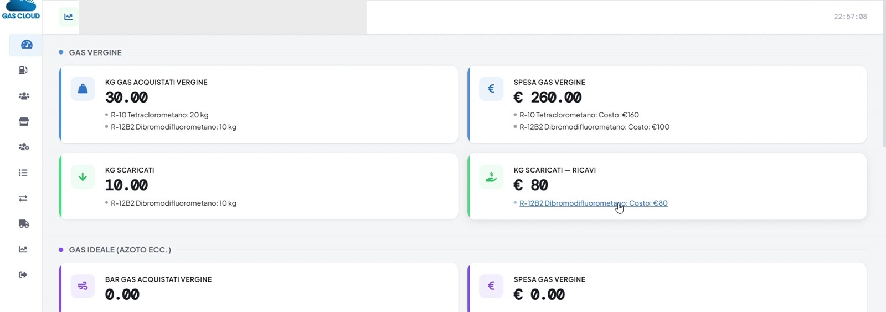
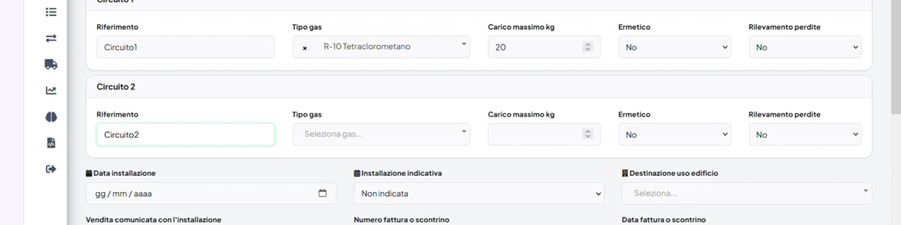
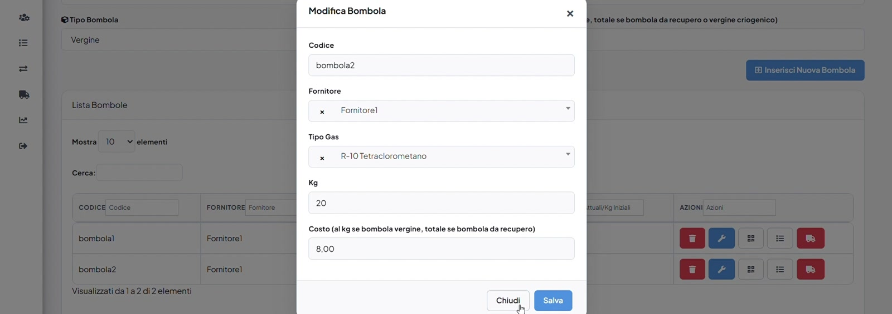
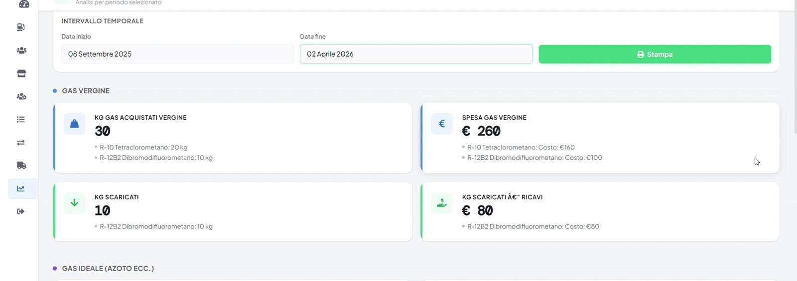
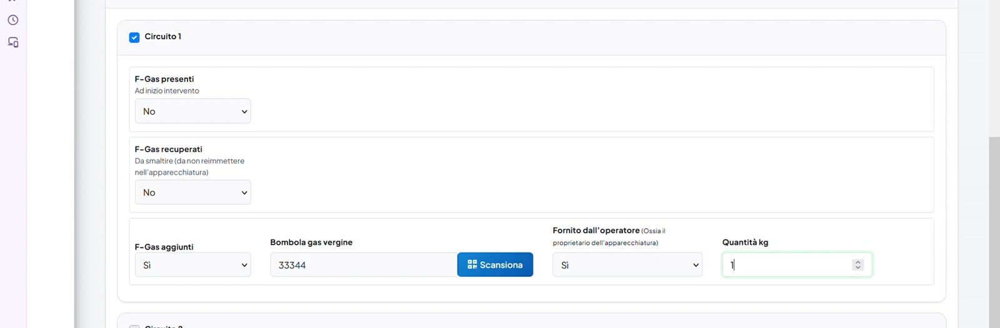

Tracciabilità frammentata
Non sai subito dove è stato utilizzato il gas e quanto ne rimane.
Gestisci bombole, apparecchiature e interventi sul campo. GasCloud controlla i dati, aggiorna il magazzino e prepara l’XML F-Gas per l’importazione.
Registrazione online · Configurazione guidata · Supporto italiano

Un unico flusso per lavorare con meno errori
Fogli, messaggi, appunti e inserimenti ripetuti fanno perdere tempo e aumentano il rischio di errori. GasCloud collega ogni operazione, dalla bombola all’intervento.
Non sai subito dove è stato utilizzato il gas e quanto ne rimane.
Gli stessi dati vengono ricopiati più volte tra campo, ufficio e portali.
Gas incompatibili, quantità errate o dati incompleti emergono solo a fine lavoro.
Identifica la bombola con il QR Code e richiama subito gas e disponibilità.
Compila l’intervento per apparecchiatura e circuito, anche senza movimento di gas.
GasCloud verifica compatibilità e quantità, aggiornando automaticamente la bombola.
Genera un unico XML con gli interventi pronti per il portale Banca Dati F-Gas.
Installazione, manutenzione, riparazione, controllo perdite e smantellamento. Registra gas presente, recuperato e aggiunto per ciascun circuito.

Giacenze aggiornate a ogni carico, scarico e recupero. Lo storico segue sempre la bombola.

Verifica i dati mancanti, seleziona gli interventi e genera il file da importare nel portale.
Consumi, movimenti e CO₂ equivalente per cliente. Esporta i dati in Excel e PDF, con analisi intelligenti nel piano Plus.


Da smartphone, tablet o computer il tecnico può identificare bombola e apparecchiatura, compilare i circuiti e concludere l’intervento. I dati sono subito disponibili per il controllo e l’esportazione.
Scegli il piano più adatto al tuo modo di lavorare e crea il tuo account.
Per iniziare a tracciare bombole e attività quotidiane.
Per gestire il flusso completo, dagli interventi all’XML.
Per aziende che vogliono più controllo e analisi.
Costruiamo insieme configurazione, supporto e condizioni adatte alla tua azienda.
Non trovi la risposta che cerchi? Scrivici: ti risponde una persona che conosce il prodotto.
Contattaci →GasCloud genera il file XML conforme al tracciato previsto, pronto per essere importato sul portale ufficiale. L’invio resta sotto il controllo dell’azienda.
Sì. Puoi registrare l’intervento anche quando non viene aggiunto o recuperato gas. La bombola viene associata solo quando serve.
Sì. Nello stesso intervento puoi compilare separatamente i dati di ogni circuito sul quale hai lavorato.
Sì. L’interfaccia è pensata anche per l’uso sul campo, inclusa la scansione dei QR Code.
No. Ogni piano include un numero definito di operatori. Per squadre oltre 10 operatori è disponibile il piano Enterprise.
Scopri un modo più lineare per gestire gas, bombole e adempimenti.